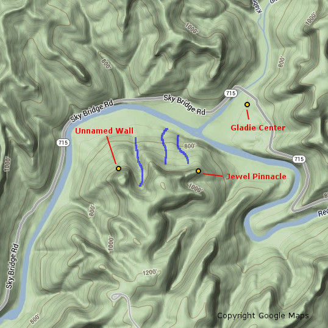
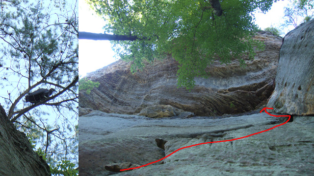
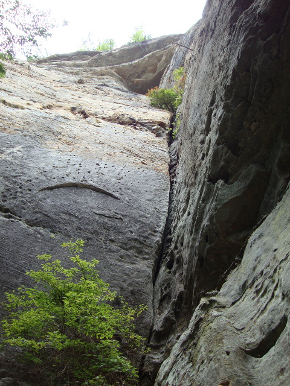
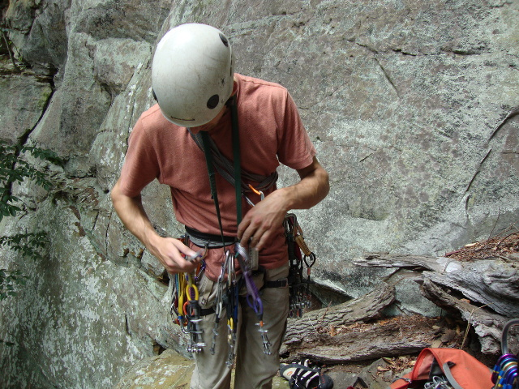
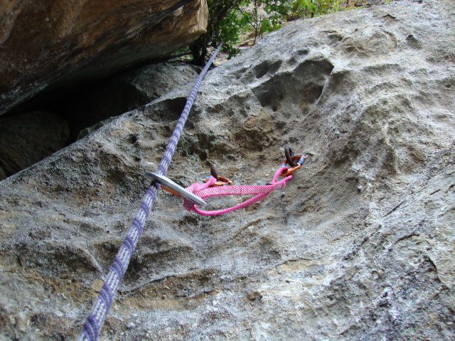
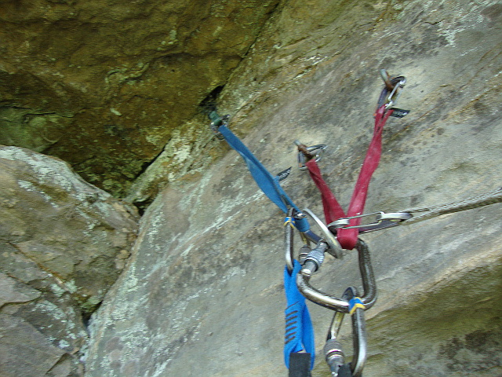
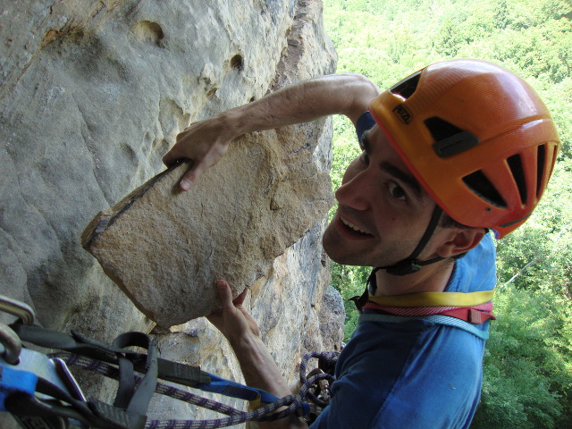
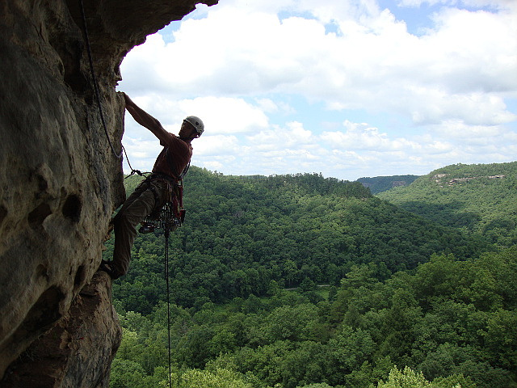
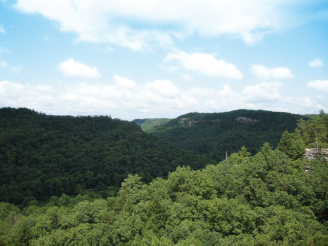

Last fall, my climbing partner Nate was exploring the area around Jewel Pinnacle in the Red River Gorge when he spotted a large wall off in the distance. After improvising an approach, he discovered a handful of appealing cracks. The cliff had no indications of previous climbing traffic. Excited to possibly nab a series of first ascents we put it on the back burner and were unable to return until this past saturday (July 13, 2013).
The approach wasn’t an epic, but it wasn’t a hike either. The best way to describe it is to cross the Red River as if you were approaching Jewel Pinnacle, and then head West rather than South toward Jewel Pinnacle. The cliff is located past the third and largest drainage while heading West. Approach time will vary based on the chosen route, but I would allow for up to an hour each direction depending on the time of year (less if it’s fall/winter due to visibility and less thrashing). It is a large cliff, capped with a moderate roof on it’s North facing side. We would later discover that it is plainly visible from KY-715 and can be identified by the smaller roof that caps the main dihedral that we would eventually climb.

Estimated location and approach of the unnamed cliff, drainages in blueAfter arriving at the cliff, we were disappointed by many of the cracks. Nate’s memory hadn’t served him accurately in all circumstances. A few were smaller than had been previously believed, and many others were predominantly wide with questionable rock quality at the base. After an aborted attempt to climb what looked to be clean crack, Nate traversed up a strange pitch with "horse heads" on it to reach a ledge covered in bird droppings. After I cleaned the pitch, and carefully avoided a histoplasmosis-covered boulder, the owner of the ledge paid us a visit. We made haste and rigged a rappel. There were no signs of gear on the ledge and we discovered no other obvious way down. If we had to grade it, I think we agreed on 5.7.

Our avian companion and the contrived first climbDisheartened by the perceived lack of quality in many of the other routes that the cliff afforded us, we decided to go all in for the main prize: the intimidating and tall main dihedral. From the ground, we surmised that a potential route to the top the cliff existed by traversing out from the roof at the top of the crack and gaining a short crack system that would lead us to the top. Nate is a stronger climber than I and it was his discovery, so he racked up and began progressing up the climb.

Looking up at the climb from the ground

Nate racking up for the climbDespite some questionable rock low down, the climb took good gear further back in the rock. The right side was featured with some pockets which provided helpful hand and foot holds. Nate placed a handful of deep #1 and #2 C4’s in the crack before he stopped.
"F#$k!" Nate yelled.
"What is it?" I inquired after a brief pause.
"Cold shuts. Very rusty and old cold shuts." He replied.

The first set of cold shutsOur first ascent dreams seemed dashed. These anchors were only approximately half way up the climb, so Nate pressed on. After negotiating a challenging wide start with relatively featureless rock and circumnavigating a healthy tree that guarded the crack, Nate once again was greeted by two cold shuts right below the roof.

The second set of cold shuts - a #.75 C4 fits nicely into the pocket aboveNate backed up the rusted cold shuts with a few pieces of gear nearby and brought me up. Once at the belay, I used a bomber #.75 C4 placement to backup the anchor and we organized and discussed the climb so far and the potential continuation of the climb. We had questions. Who placed these cold shuts? When did they place them? Why did they place intermediate anchors when a gear belay was readily available and when the route clearly continues? Why is there no record of this cliff or route that we are aware of?
While hanging at the roof belay, Nate pointed out a particularly precarious looking block. After inspecting it and testing it, I realized it was entirely detached and teetering on the horizontal ledge. I began to find all manner of small and medium sized blocks to clear off the ledge, though one in particular was the clear winner. Taking into consideration our interest in the traverse roof pitch and the unlikelihood of any unsuspecting victims below we decided that cleaning the horizontal ledge was a logical next step. Thus, I began trundling away. The largest block made a satisfying thud that echoed across the valley as it implanted itself into the soft soil below.

This block sat teetering on the ledge used for the traverse
Having completed the house keeping, we turned our attention to the elephant in the room: were we going to do the traverse or call it quits? I had no interest in leading the traverse - the fear of the unknown got the best of me. Nate had bigger plans. After ample safety-related discussion, Nate began the traverse.
After placing a draw into the anchor itself as Nate’s "first piece" to avoid a fall directly onto my harness, he carefully progressed toward the edge of the roof. A fiddly #3 C4 placement in the somewhat flaring upper crack was his first piece of protection and it wasn’t confidence inspiring. The flaring edge that provides hand holds vanished about halfway out the traverse, and Nate was left with nothing except a small one to two finger pocket that could potentially take a small tricam (black or pink). However, this was also the only feature that could be considered a hold at this portion of the traverse and ended up being the key to the sequence for me. After expressing disdain for his lack of racked tricams, he decrypted the moves using the tiny pocket. Nate completed the beginning of the traverse, found a remarkably questionable placement for a #1 C4, and was comfortably resting on a decent hold directly on the corner that marked the end of the roof.

Nate relaxing and soaking in some exposureOut of my sight and almost out of earshot, all I could do was death grip the brake strand when the rope was still and hope things were going well. Nate’s next piece was a #2 Master Cam which, while better than the #1 C4, was still not a perfect piece. It wasn’t until Nate committed to traversing even further right that he finally found a bomber #5 C4 placement. After negotiating a particularly dirty bulging ledge traverse, Nate reached a tree that marked the bottom of the top of the cliff, built an anchor, yelled off belay as loud as he could, and breathed a sigh of relief.
Down below the roof, still hanging in my harness, I, too, breathed a sigh of relief. My calm was interrupted once the rope came taught and it was my turn to do the traverse. Perhaps it was the adrenaline, but I made quick work of the exposed opening moves. When I arrived at the #1 C4 placement, I was in awe of it’s terribleness. It was in an angling horizontal barely deep enough for all four lobes to touch rock and a crack on the rock above the horizontal pointed right at the cam. After the excitement of breaking off a hand hold and complaints of the dirty final bulging traverse, I joined Nate at the tree belay. A quick double rope rappel (a single 70m would be insufficient) off of two solid trees put us on the ground and the ropes soon joined us on terra firma.

Not a bad viewMy respect and admiration goes to my partner and professional badass Nate W. for keeping it together on the traverse pitch. I wouldn’t hesitate to lead the lower pitch(es), but the sketchy pro on the traverse is pushing a bit beyond my current comfort zone. We avoided discussing grades until the end of the day. After considerable debate, I believe we consider it 9/9+. It’s hard to grade a route like this, so all we were left with was comparisons. It seemed considerably harder than many of the 9’s I have done and seemed to straddle many of the 9+ routes. The offwidth section is challenging, and the traverse sequence was not easy either. I was mono’d into the small pocket palming on a sloper at one point with feet I could not see. As for the gear - great until the roof, then at least PG-13 if not R. There is gear, but it is very questionable. A fall would result in a swing into the opposite side of the wall which could lead to a broken ankle or leg.
We had fun, and convinced ourselves that the traverse pitch was potentially a first ascent, given the number of blocks we cleaned. It would be very difficult to use the ledge while it was covered with loose blocks. The cold shuts beneath the roof showed rust despite being very protected, while the lower cold shuts were flaking, so we know that their history is far from recent. Thus, we have questions, for the most part purely to satisfy our own historical curiosities.
- Does anyone have any record of this cliff or route?
- Who placed the cold shuts?
- When did they place them?
- Why did they place intermediate anchors when a gear belay was readily available and when the route clearly continues?
Any speculation or insight is welcomed!